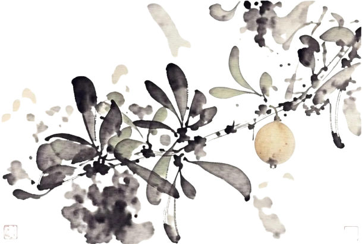

Charrua AI Safety Hub (CHAISH)Charrua AI Safety Hub (CHAISH)
Comunidad uruguaya de seguridad en IA. Aprendemos, nos equivocamos y construimos entre tod@s, en español y desde el contexto local. Nuestro horizonte: auditar sistemas de IA reales para proteger a las personas más vulnerables.Uruguayan AI safety community. We learn, get it wrong and build together, in Spanish and from the local context. Our horizon: auditing real AI systems to protect the most vulnerable.
Quiénes somos · Montevideo, UruguayWho we are · Montevideo, Uruguay
Charrua AI Safety Hub (CHAISH)
La IA no es neutral. Su seguridad tampoco.AI is not neutral. Neither is its safety.
Las narrativas que presentan la IA como una fuerza inevitable, o como un riesgo existencial que solo unas pocas personas iluminadas pueden manejar, también hacen política. Desresponsabilizan a las empresas y concentran el poder de decidir. Nosotros partimos de otro lugar y entendemos la seguridad en IA como una práctica abierta y comunitaria que se sostiene entre muchas personas.The narratives that present AI as an inevitable force, or as an existential risk only a few enlightened people can manage, are also doing politics. They lift responsibility off companies and concentrate the power to decide. We start from a different place and understand AI safety as an open, community practice sustained by many people.
El mito de lo inevitableThe inevitability myth
La IA es una industria con dueños, decisiones y responsables concretos. Presentarla como una fuerza cósmica o un destino hace más difícil pedirle cuentas a cualquiera.AI is an industry with owners, decisions and concrete people responsible for it. Presenting it as a cosmic force or a destiny makes it harder to hold anyone to account.
Seguridad para unos pocosSafety for the few
La seguridad en IA se define hoy en institutos privados, financiados en parte por quienes desarrollan los sistemas. Nosotros la entendemos como una práctica abierta, que se aprende en comunidad y se discute entre tod@s.AI safety is defined today in private institutes, partly funded by the people developing the systems. We understand it as an open practice, learned in community and discussed by everyone.
Tierra, agua y trabajoLand, water and labor
La IA se sostiene sobre territorio: centros de datos, minería, energía y trabajo humano mal pago. En el Sur Global esos costos ya son concretos, y también se están volviendo concretos en Uruguay; varios casos están en el mapa local.AI rests on territory: data centers, mining, energy and underpaid human labor. In the Global South those costs are already concrete, and they are becoming concrete in Uruguay too; several cases are in our local map.
La batalla también es de imaginariosThe battle over imaginaries
Además de resistir, hay que imaginar y construir otra tecnología posible desde acá y en español, que es lo que intentamos hacer con este hub.Resisting is not enough; we also have to imagine and build another possible technology from here and in Spanish, which is what we are trying to do with this hub.
Nuestros frentesOur lines of work
La seguridad en IA avanza rápido y no entra por una sola puerta. Nos juntamos a leer, discutir y replicar lo que otros publican, en español y sin jerarquías.AI safety moves fast and does not come through one door. We gather to read, discuss and replicate what others publish, in Spanish and without hierarchies.
Grupo de prácticaPractice group
Espacio abierto para quien quiera acercarse a la seguridad en IA, desde curiosear hasta investigar.Open space for anyone approaching AI safety, from curious to researching.
Abierto a todosOpen to allLectura y discusiónReading and discussion
Club de lectura y talleres para replicar papers accesibles, en español.Reading club and workshops to replicate approachable papers, in Spanish.
PublicacionesPublicationsMentoríaMentoring
Quien ya lleva un tiempo en el grupo acompaña al que recién llega. No pedimos que vengas siendo experto.People a bit further along mentor those just arriving. You don't need to be an expert to join.
Acompañamiento entre paresPeer supportQue la seguridad en IA sea un bien común: abierta, accesible y construida entre tod@s.AI safety should be a common good: open, accessible and built together.
Somos una comunidad independiente en Uruguay dedicada a la seguridad de la IA (AI Safety). Para participar no hace falta tener credenciales académicas. Acercamos la seguridad de la IA a los países de habla hispana: educamos, investigamos y formamos. Queremos una IA segura, transparente y controlable, en español y desde el contexto local. Nos reconocemos en la red de hubs como BAISH y AI Safety España, y apuntamos a ser el nodo uruguayo de esa red regional.We are an independent community in Uruguay dedicated to AI safety. No academic credentials are needed to take part. We bring AI safety to Spanish-speaking countries: we educate, research and train. We want safe, transparent and controllable AI, in Spanish and grounded in local context. We recognize ourselves in the network of hubs such as BAISH and AI Safety España, and we aim to be Uruguay's node in that regional network.
Una región que entienda y gobierne su propia IA. Que la seguridad no se decida solo en laboratorios lejanos, también desde acá, con personas y organizaciones locales que puedan influir en cómo la IA nos afecta.A region that understands and governs its own AI. A place where safety is not decided only in distant labs, but also here, with local people and organizations able to influence how AI affects us.
Tres pilares · así trabajamosThree pillars · how we work
AprendemosFallamosEnseñamos We learnWe failWe teach
Cómo trabajamos, cada díaHow we work, every day
IndependenciaIndependence
Nos dirigimos por nuestra cuenta: no dependemos de ninguna empresa ni laboratorio, y colaboramos con quien comparte nuestros valores.We steer ourselves: we depend on no company or lab, and we collaborate with those who share our values.
Aprendizaje en comunidadLearning in community
Construimos, nos equivocamos y nos enseñamos entre tod@s. No hace falta ser experto para empezar: se aprende haciendo, en comunidad y en español.We build, we get it wrong, and we teach each other. You don't need to be an expert to start: we learn by doing, in community and in Spanish.
Fallas abiertasFailing openly
Admitimos abiertamente cuando nos equivocamos.We openly admit when we get it wrong.
Abierto a todos los nivelesOpen to all levels
Podés sumarte desde cualquier nivel: no se pide título, doctorado ni experiencia previa. La seguridad en IA se aprende y se construye mejor entre tod@s.Join from any level: no degree, PhD or prior experience needed. AI safety is learned and built better together.
Contexto localLocal context
La seguridad de la IA se vive distinto en los países de habla hispana; la encaramos desde acá.AI safety is experienced differently in Spanish-speaking countries; we face it from here.
Territorio y ambienteTerritory and environment
La IA consume tierra, agua y energía, y deja residuos. Defendemos que esos costos se discutan acá, donde se instalan los centros de datos, y no solo donde se diseñan los modelos.AI consumes land, water and energy, and leaves waste. We defend discussing those costs here, where data centers are built, not only where models are designed.
Agencia humanaHuman agency
La IA debe ampliar lo que podemos hacer, no reemplazarnos ni controlarnos.AI should expand what we can do, not replace or control us.
Enfrentamos la seguridad de la IA desde donde estamos: divulgación, comunidad y formación, no desde un laboratorio aislado.We face AI safety from where we are: outreach, community and training, not from an isolated lab.
Creemos que la seguridad de la IA no debería ser cosa de unos pocos. Nuestro enfoque junta conocimiento accesible, una comunidad que aprende en grupo y la formación de nuevas generaciones, todo en español y desde el contexto local.We believe AI safety should not be a matter for a few. Our approach brings together accessible knowledge, a community that learns together and the training of new generations, all in Spanish and grounded in local context.
La IA en UruguayAI in Uruguay
Seis casos muestran dónde se juega la seguridad en IA en el país, con decisiones, proyectos y costos que ya están acá.Six cases show where AI safety plays out in this country, with decisions, projects and costs that are already here.
Centro de datos en CanelonesData center in Canelones
Uruguay aprobó el centro de datos de Google en Canelones; la evaluación oficial estima 25.000 toneladas de CO₂ al año y 86 de residuos peligrosos. El plan original usaba millones de litros de agua para refrigerar y se cambió tras la peor sequía desde 1950. Marco: «Los datacenters son bases militares en el extranjero», Cecilia Rikap (la diaria). Fuente: The Guardian, 1/8/2024.Uruguay approved Google's data center in Canelones; the official assessment estimates 25,000 tonnes of CO₂ a year and 86 tonnes of hazardous waste. The original plan used millions of litres of water for cooling and was changed after the worst drought since 1950. Frame: “Data centers are military bases abroad”, Cecilia Rikap (la diaria). Source: The Guardian, 1 Aug 2024.
+Colonia y la "criptociudad" Praxis+Colonia and the "crypto-city" Praxis
Un proyecto de ciudad tecnológica de 500 hectáreas, +Colonia, se promociona con inversores extranjeros y la "criptociudad" Praxis. La prensa lo discute como ciudad privada y advierte por una "isla de prosperidad" en el suroeste del país. Fuente: TV Pública, 30/9/2026.A 500-hectare tech city project, +Colonia, is being promoted with foreign investors and the "crypto-city" Praxis. The press debates it as a private city and warns of an "island of prosperity" in the country's southwest. Source: TV Pública, 30 Sep 2026.
Estrategia Nacional de IA 2024-2030National AI Strategy 2024-2030
El Comité Estratégico del Sector Público para la IA y Datos aprobó el 21 de noviembre de 2024 la Estrategia Nacional de Inteligencia Artificial 2024-2030, coordinada por AGESIC. Fuente: AGESIC, 22/11/2024.The Strategic Committee for Public Sector AI and Data approved the National AI Strategy 2024-2030 on 21 November 2024, coordinated by AGESIC. Source: AGESIC, 22 Nov 2024.
Proyecto de ley sobre deepfakesBill on deepfakes
La Cámara de Representantes aprobó el 17 de diciembre de 2025 un proyecto que modifica la Ley 19.580 para sancionar la divulgación de contenidos sexuales generados con IA. Fuente: Cámara de Representantes, 17/12/2025.The Chamber of Representatives approved on 17 December 2025 a bill amending Law 19,580 to penalise the dissemination of AI-generated sexual content. Source: Chamber of Representatives, 17 Dec 2025.
Ceibal lanza EduIA LabCeibal launches EduIA Lab
Ceibal presentó el 26 de marzo de 2025 EduIA Lab, un laboratorio regional de inteligencia artificial en educación, con la presencia del presidente Yamandú Orsi. Fuente: Presidencia, 26/3/2025.Ceibal presented EduIA Lab, a regional artificial intelligence laboratory for education, on 26 March 2025, with President Yamandú Orsi in attendance. Source: Presidency, 26 Mar 2025.
Inventario de IA en el EstadoAI inventory in the State
Amenaza Roboto pidió a 24 organismos públicos un inventario de sus proyectos de IA; nueve entregaron listas y el Ministerio del Interior no contestó. Fuente: Amenaza Roboto, 14/9/2026.Amenaza Roboto asked 24 public bodies for an inventory of their AI projects; nine provided lists and the Ministry of the Interior did not reply. Source: Amenaza Roboto, 14 Sep 2026.
Artículo 01Article 01
Memoria abiertaMemoria abierta
Series para mirarSeries to watch
Dos series en español para entrar en el tema: seguridad en IA desde Latinoamérica, y gobernanza desde el Estado uruguayo.Two Spanish-language series to get into the subject: AI safety from Latin America, and governance from the Uruguayan State.
Dónde seguir el temaWhere to follow this
Tres fuentes locales y dos internacionales.Three local sources and two international ones.
Amenaza RobotoAmenaza Roboto
Periodismo tecnológico desde Uruguay (Dobcast Media): cobertura sobre IA, datos y su impacto local. amenazaroboto.comTechnology journalism from Uruguay (Dobcast Media): coverage of AI, data and their local impact. amenazaroboto.com
Observatorio de Inteligencia Artificial (AGESIC)Artificial Intelligence Observatory (AGESIC)
El observatorio de IA del Estado uruguayo: casos de uso de IA en el Estado, recomendaciones sobre transparencia algorítmica y lineamientos de uso ético y responsable. gub.uyThe Uruguayan State's AI observatory: cases of AI use in the State, algorithmic transparency recommendations, and guidelines for ethical and responsible use. gub.uy
Pablo Da Rocha (la diaria)Pablo Da Rocha (la diaria)
Columnas sobre IA, trabajo y economía desde Uruguay: automatización, salarios, regulación y dependencia. ladiaria.com.uyColumns on AI, labor and economics from Uruguay: automation, wages, regulation and dependency. ladiaria.com.uy
Team HumanTeam Human
Movimiento internacional impulsado por creadores, con el apoyo del Center for AI Safety, para que la humanidad mantenga el control de la IA. teamhuman.orgAn international, creator-led movement supported by the Center for AI Safety, to keep humans in control of AI. teamhuman.org
The AI Resist ListThe AI Resist List
Directorio global de iniciativas que resisten la IA y construyen alternativas: resistir, rechazar, reclamar y reimaginar. Una de las referencias con las que pensamos esta página. airesistlist.orgA global directory of initiatives that resist AI and build alternatives: resist, refuse, reclaim and reimagine. One of the references behind this page. airesistlist.org
La IA ya puede hacer estoAI can already do this
Las capacidades avanzan rápido. Cada una abre posibilidades, pero también nuevos riesgos que la seguridad en IA busca anticipar y mitigar. Acá van ejemplos reales de lo que la IA hace hoy.Capabilities advance fast. Each one opens possibilities, but also new risks that AI safety seeks to anticipate and mitigate. Here are real examples of what AI does today.
Temas que queremos estudiarTopics we want to study
Nuestra meta es llegar a investigar — empezando por replicar papers accesibles en grupo y participar en sprints de investigación como los de Apart Research. Lo que aprendemos, lo compartimos en español.Our goal is to get to research — starting by replicating accessible papers as a group and joining research sprints like Apart Research's. What we learn, we share in Spanish.
Interpretabilidad mecanicistaMechanistic interpretability
Entender qué pasa dentro de las redes neuronales para poder inspeccionarlas.Understanding what happens inside neural networks so they can be inspected.
Alineación de modelos de lenguajeLanguage model alignment
Métodos para que los LLMs persigan objetivos alineados con los intencionados.Methods so LLMs pursue goals aligned with the intended ones.
Entrenamiento robustoRobust training
Formas de entrenar modelos que resistan fallas, manipulación y comportamientos no deseados.Ways to train models that resist failures, manipulation and unwanted behaviors.
Aprendizaje de valoresValue learning
Cómo los sistemas aprenden lo que valoramos y traducen preferencias humanas en comportamiento.How systems learn what we value and turn human preferences into behavior.
AI Safety vs AI SecurityAI Safety vs AI Security
Ambos se traducen como "seguridad" en español y suelen confundirse. Son campos distintos. Por eso trabajamos en AI Safety.Both translate as "seguridad" in Spanish and are often confused. They are different fields. That is why we work on AI Safety.
AI Safety
Nuestro enfoqueOur focusCampo ocupado de que los sistemas de IA no causen daño a la humanidad. Propone que la IA podría fallar por sí misma al perseguir objetivos distintos a los intencionados.A field concerned with AI systems not harming humanity. It holds that AI could fail on its own by pursuing goals other than the intended ones.
Ejemplos:Examples:
- Comportamiento imprevistoUnexpected behavior
- EngañoDeception
- Capacidades peligrosasDangerous capabilities
- Pérdida de controlLoss of control
AI Security
Campo distinto que se solapa con AI Safety, enfocado en la defensa de un sistema de IA contra adversarios o atacantes. Propone que el sistema puede ser vulnerado por un tercero.A distinct field that overlaps with AI Safety, focused on defending an AI system against adversaries or attackers. It holds that the system can be compromised by a third party.
Ejemplos:Examples:
- Prompts maliciososMalicious prompts
- Robo de datosData theft
- HackeoHacking
- Explotación por tercerosExploitation by third parties
Preguntas frecuentesFrequently asked questions
La seguridad en IA sirve para evitar riesgos y daños que puedan venir del uso indebido o del mal diseño de los sistemas. Proteger eso cuida a las personas y a las comunidades. Favorece un desarrollo responsable.AI safety helps avoid risks and harm that can come from misuse or poor system design. Protecting that cares for people and communities. It supports responsible development.
Personas de distintos orígenes, muchas autodidactas y sin credenciales académicas, que quieren trabajar por la seguridad y la democratización de la IA en beneficio de la sociedad. Para participar no hace falta ser especialista.People of different backgrounds, many self-taught and without academic credentials, who want to work for AI safety and democratization for the benefit of society. You don't need to be a specialist to take part.
Podés contactarnos para proponer colaboraciones, participar en nuestros talleres o apoyar nuestras iniciativas. Estamos abiertos a alianzas que compartan nuestros valores y objetivos.You can contact us to propose collaborations, join our workshops or support our initiatives. We are open to alliances that share our values and goals.
AI Safety. Ambos son términos de origen inglés que en español se pisan porque pueden traducirse como "seguridad". AI Safety se ocupa de que los sistemas no causen daño a la humanidad; AI Security es un campo distinto que se solapa con AI Safety, enfocado en defender sistemas contra adversarios. Trabajamos en AI Safety.AI Safety. Both are English terms that overlap in Spanish because they translate as "seguridad". AI Safety deals with systems not harming humanity; AI Security is a distinct field that overlaps with AI Safety, focused on defending systems against adversaries. We work on AI Safety.
Forma parteBe part of it
Unite a nuestra misiónJoin our mission
Sumate al grupo: contanos qué te interesa y te escribimos. También podés escribirnos a chaish@iaparaelbien.org.Join the group: tell us what interests you and we'll write back. You can also email us at chaish@iaparaelbien.org.
Completar el formularioOpen the form
El formulario se abre en Tally, que guarda los datos en la Unión Europea y no los usa para otra cosa.The form opens on Tally, which stores data in the European Union and doesn't use it for anything else.
